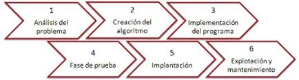

Estructura de un Programa Informático y Python
Etapas
Desglosando el proceso
El desarrollo de un programa sigue un proceso estructurado que permite planificar, diseñar, implementar y mantener un sistema informático de manera eficiente. Estas fases son esenciales para garantizar que el software funcione correctamente y cumpla con sus objetivos.
A continuación, se analizan cada una de estas etapas en detalle.

1. Análisis del Problema
Antes de escribir una sola línea de código, es fundamental comprender qué problema se desea resolver. Esta fase consiste en definir claramente los requisitos del programa, incluyendo:
Objetivo del software: Qué necesidad cubre y qué problema resuelve.
Usuarios finales: Quiénes lo van a utilizar y qué experiencia deben tener.
Restricciones: Limitaciones de hardware, software o tiempo.
Datos de entrada y salida: Qué información recibe el programa y qué debe devolver.
Un análisis deficiente puede llevar a desarrollar un programa que no cumpla con los requisitos reales, provocando pérdida de tiempo y recursos.
2. Diseño del Programa
En esta fase se estructura el programa antes de comenzar su implementación. Se define cómo se organizará el código, qué módulos serán necesarios y qué herramientas se utilizarán.
Estructura general del programa: Se decide si se usará una programación estructurada, orientada a objetos o funcional.
Diagramas de flujo: Representaciones visuales del proceso del programa.
Algoritmos: Secuencias de pasos que el programa debe seguir.
Elección del lenguaje de programación: Se elige el más adecuado en función del proyecto.
Un buen diseño facilita la implementación, reduce errores y mejora la mantenibilidad del código.
3. Codificación
En esta fase se escribe el programa en un lenguaje de programación adecuado, siguiendo el diseño previamente establecido.
Estructura clara del código: Se siguen buenas prácticas de programación.
Uso de comentarios: Para mejorar la comprensión del código.
Modularidad: Dividir el código en funciones o clases para facilitar su mantenimiento.
Un código bien escrito y estructurado reduce la posibilidad de errores y facilita futuras modificaciones.
4. Pruebas y Depuración
Una vez codificado el programa, es fundamental realizar pruebas para detectar y corregir errores antes de su implementación.
Pruebas unitarias: Se prueban partes específicas del código para verificar su correcto funcionamiento.
Pruebas de integración: Se prueba la interacción entre distintos módulos del programa.
Depuración: Se corrigen errores y optimiza el código.
Una buena fase de pruebas asegura que el software sea robusto y confiable, reduciendo fallos en producción.
5. Documentación
La documentación es clave para facilitar el mantenimiento del programa y permitir que otros desarrolladores lo entiendan.
Comentarios en el código: Explicaciones dentro del código para aclarar su funcionamiento.
Manuales de usuario: Guías para ayudar a los usuarios a utilizar el software.
Documentación técnica: Explicaciones sobre la arquitectura y lógica del programa.
Sin documentación adecuada, el mantenimiento del código se vuelve más complicado y costoso.
6. Implementación y Mantenimiento
Una vez que el programa ha sido probado y documentado, se lanza su versión final para su uso.
Implementación: Se instala el software en el entorno donde será utilizado.
Monitoreo: Se supervisa su rendimiento en el mundo real.
Actualizaciones y mejoras: Se optimiza el programa y se añaden nuevas funcionalidades.
El software debe evolucionar para adaptarse a nuevas necesidades y mejorar su rendimiento.
Obra publicada con Licencia Creative Commons Reconocimiento Compartir igual 4.0